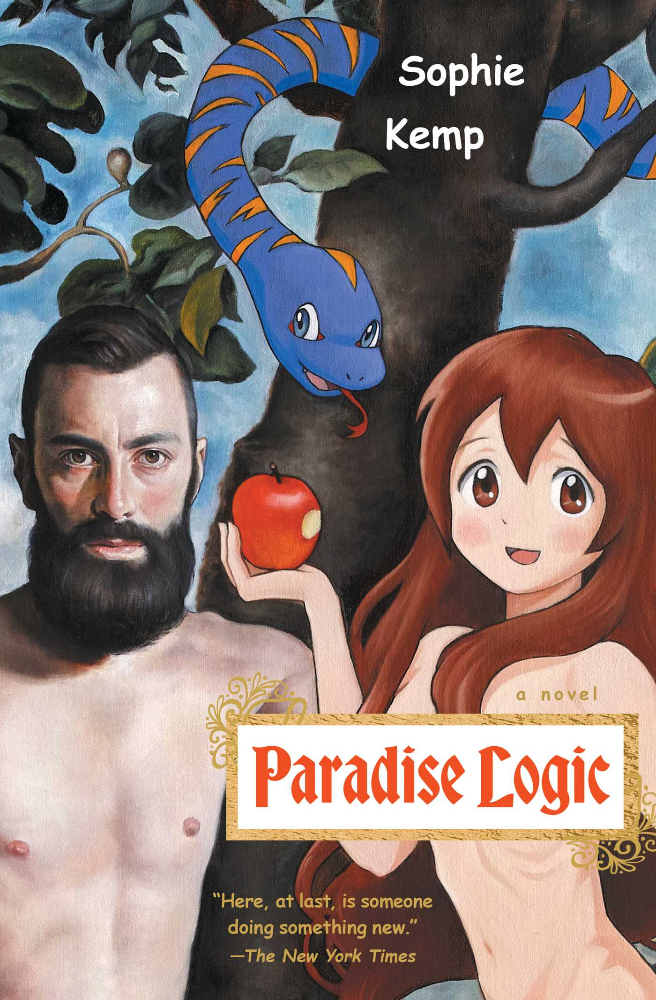

date read: 2026.03.03 ~ 2026.03.06
Paradise Logic

It was decreed from the moment she was born. Twenty-three-year-old Reality Kahn would embark on a quest so great, so bold. She would become the greatest girlfriend of all time. She would be a zine maker, an aspiring notary, the greatest waterslide commercial actress on the Eastern Seaboard. She would receive messages from the beyond in the form of advice from the esteemed and ancient ladies magazine, Girlfriend Weekly.
When she attends a party in Gowanus at a punk venue known as “Paradise,” Reality meets Ariel, who will become her boyfriend. She bravely works for his everlasting affection and joins a clinical trial created by Dr. Zweig Altmann to help her become a more perfect girlfriend. She stars in a new commercial. She learns how to become an indelible host. But Reality will also learn that sheer will and determination, and a very open heart, are not always enough to make true love manifest.
At turns laugh-out-loud funny, tragic, and jarring, Reality’s quest grows ever complicated as the men in her Ariel, her waterpark commercial agent Jethro, and Dr. Altmann himself prove treacherous. Paradise Logic is a thrilling, psychosexual breakdown of our obsession with authentic true love, asking whether that is even possible in a patriarchal world, and announces Sophie Kemp as a wholly original, transformative, and brilliant new voice in fiction."
-Goodreads
First of all, welcome to MAYASMIND new "BOOKS!" tab! I'm joyful to begin this reading journey. Maybe this will help me read more, like an accountability partner or something. 行きましょう！
Even though I read this book nearly three months ago, I decided to make this my first book to talk about since it is my favorite of all time (FOAT?) It has all of the elements I love: humor, an interesting plot, a clear objective, an underlying dark message, set in New York City, and most importantly, a very weird protagonist who doesn't try to hide their weirdness and quirkiness. I think I love them because it makes me feel more comfortable in my skin. I remember having a bolstered confidence because of this book, swagging around the streets of Philidephia (where I was at the time of reading) with my pink lepoard print pajamas, not giving a darn. It's all thanks to Reality. Even if she's fictional, Reality Kahn is real in my heart. Forever.
I don't have many other words to say other than please read this book. That is if you're over the age of 16. I loved this book so much I would read it over again.
Sorry that this was quite the short review. It's even shorter than the description, but I really wanted to post something here so I can get it up and running. The next one will most likely be more in depth I think. See ya next book!